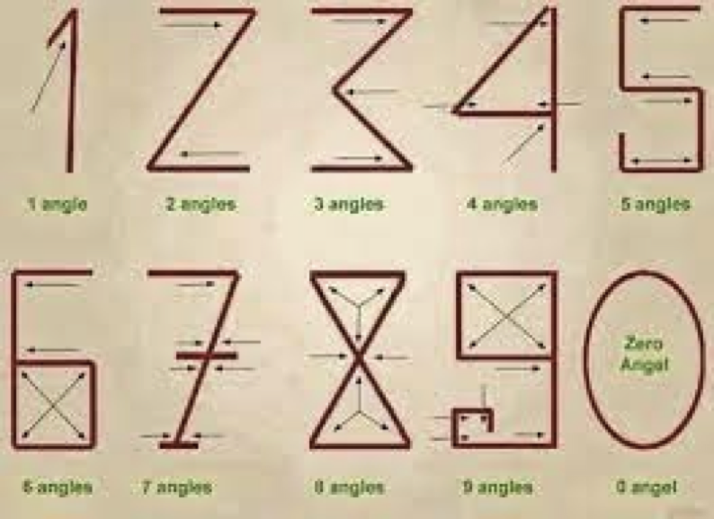
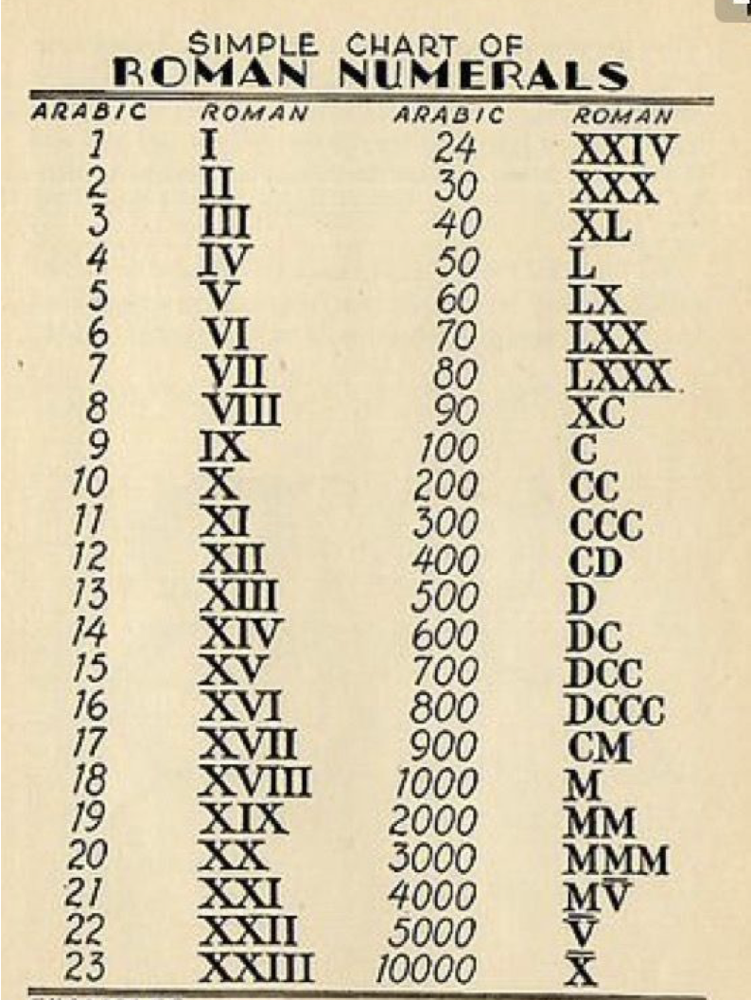
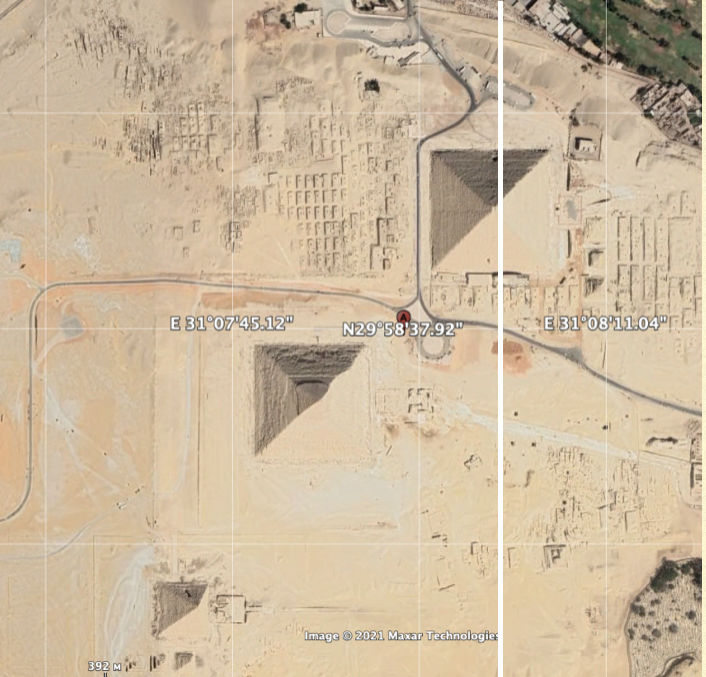

Riddles of nature, coincidences, or prehistoric sanctuaries thats what we hear when ask about artificial
monuments of the ancient times. When scientists didn't have a glue what for was constructed one's monument
they call it temple. And it becomes easy to understand. Or not? Our research focuses on finding answers to
simple and still mysterious questions: who built the pyramids, when, how, and most importantly why? We already have some answers, but these answers are usually scattered and do not correlate with each other at all, which we will try to correct with some facts, and I have to admit that the truth we learn and which, if admitted, can change all the history we know, and will cause rewriting thousands of history books. The most important question is why are the pyramids located in the places where they are? And created in the form in which they are?
Let's take a look at such simple object as numerals. We know that we have two types known as arabic and roman.
We also know that arabic numerals much older than roman, but how exactly much? First written records return us to ancient Persia and 3000 years BC. But as it was mention earlier it's our written language. Maybe such object as arabic numerals existed long before our civilization learned to write.
All mathematics can run only arabic numerals. Only few and simple only math can be run with roman numerals.
And even design of numerals shows us that romanian numbers looks like consequence of degradation.
Or, may be, on contrary, arabic numbers are the heritage from more intelligent civilizations?
The global Matrix we will be talking about includes not only pyramids, but also large geometric shapes consisting of earthen ramparts, mounds, circles and other geometric shapes, ancient buildings and architectural objects whose purpose has not survived to our time, and historians have called them religious buildings and astronomical observatories because of the lack of other theories.
Our culture consists mostly of literature, the written heritage of which has given us a lot of material, so we can read everything created with the alphabet, but the language of the prehistoric matrix was built in the language of mathematics. And only the reluctance of historians to recognize that prehistoric civilizations knew and used mathematics, led to the fact that all these artifacts are still silent. The purpose of this work is to correct this annoying mistake. If we can do that, prehistoric artifacts will begin to tell their true story.
First of all lets make one adjustment. Lets assume that the Designers of Matrix knew geography no less than we are. And the most important artefact of geography is Prime Meridian. We know it as Greenwich or GMT.
What if Designers of Matrix has its own. And what is it?
Their Prime Meridian was quite clearly indicated by the largest pyramid, the longitude of which corresponds to our 31.08'03.3'' east to Greenwich.
This means that when we calculate the longitude in their global Matrix, we have to adjust the longitude coordinates to the longitude of Giza.
As for latitudes, they used the same reference point that we use - the equator.